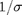
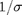
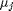
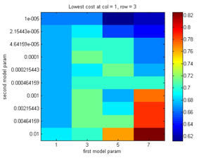
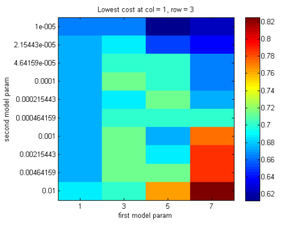

Supervised learning using non-parametric discriminative models in pmtk3
This page was auto-generated by publishing tutKernelClassif.m
Contents
Kernel functions
One common form of basis function expansion is to define a new feature vector  by comparing the input
by comparing the input  to a set of prototypes or examplars
to a set of prototypes or examplars  as follows:
as follows:

Here  is a 'kernel function', which in this context just means a function of two arguments. A common example is the Gaussian or RBF kernel
is a 'kernel function', which in this context just means a function of two arguments. A common example is the Gaussian or RBF kernel

where  is the 'bandwidth'. (The quantity  is known as the scale or precision.) Another common example is the polynomial kernel
is the 'bandwidth'. (The quantity  is known as the scale or precision.) Another common example is the polynomial kernel

where d is the degree. Often we take the prototypes  to be the training vectors (rows of  ), but we don't have to.
), but we don't have to.
The advantages of using kernels include the following
- We can apply standard parametric models (e.g., linear and logistic regression) to non-vectorial inputs (e.g., strings, molecular structures, etc.), by defining to be some kind of function for comparing structured inputs.
- We can increase the flexibility of the model by working in an enlarged feature space.
Below we show an example where we fit the XOR data using kernelized logistic regression, with various kernels and prototypes (from logregXorDemo.m ).
clear all; close all [X, y] = createXORdata(); rbfScale = 1; polydeg = 2; protoTypes = [1 1; 1 5; 5 1; 5 5]; protoTypesStnd = standardizeCols(protoTypes); kernels = {@(X1, X2)kernelRbfSigma(X1, protoTypesStnd, rbfScale) @(X1, X2)kernelRbfSigma(X1, X2, rbfScale) @(X1, X2)kernelPoly(X1, X2, polydeg)}; titles = {'rbf', 'rbf prototypes', 'poly'}; for i=1:numel(kernels) preproc = preprocessorCreate('kernelFn', kernels{i}, 'standardizeX', true, 'addOnes', true); model = logregFit(X, y, 'preproc', preproc); yhat = logregPredict(model, X); errorRate = mean(yhat ~= y); fprintf('Error rate using %s features: %2.f%%\n', titles{i}, 100*errorRate); predictFcn = @(Xtest)logregPredict(model, Xtest); plotDecisionBoundary(X, y, predictFcn); if i==2 hold on; plot(protoTypes(:, 1), protoTypes(:, 2), '*k', 'linewidth', 2, 'markersize', 10) end title(titles{i}); end
Error rate using rbf features: 0% Error rate using rbf prototypes features: 0% Error rate using poly features: 0%


In the first example, we use an RBF kernel with centers at 4 manually chosen points, shown with black stars. In the second and third examples, we use an RBF and polynomial kernel, centered at all the training data. We can use L1 regularization to select a subset of the training data, as we illustrate below.
Using cross validation to choose the kernel parameters
We can create a grid of models, with different kernel params and different strength regularizers, as shown in the example below ( from logregKernelCrabsDemo.m ). If CV does not pick a point on the edge of the grid, we can be faily confident we have searched over a reasonable range. For this reason, it is helpful to plot the cost surface.
clear all loadData('crabs'); % Here we cross validate over both lambda and Sigma lambda = logspace(-5, -2, 10); %logspace(-7, -4, 20); Sigma = 1:2:8; % 8:0.5:10; paramRange = crossProduct(lambda, Sigma); regtypes = {'L1', 'L2'}; for r=1:length(regtypes) regtype = regtypes{r}; fitFn = @(X, y, param)... logregFit(X, y, 'lambda', param(1), 'regType', regtype, 'preproc', ... preprocessorCreate('kernelFn', @(X1, X2)kernelRbfSigma(X1, X2, param(2)))); predictFn = @logregPredict; lossFn = @(ytest, yhat)mean(yhat ~= ytest); nfolds = 5; useSErule = true; plotCv = true; tic; [LRmodel, lambdaStar, LRmu, LRse] = ... fitCv(paramRange, fitFn, predictFn, lossFn, Xtrain, ytrain, nfolds, ... 'useSErule', useSErule, 'doPlot', plotCv, 'params1', lambda, 'params2', Sigma); time(r) = toc yhat = logregPredict(LRmodel, Xtest); nerrors(r) = sum(yhat ~= ytest) end
time =
15.3646
nerrors =
61
time =
15.3646 3.5041
nerrors =
61 59
 
 We see that L2 regularization (which results in a dense model) is both more accurate and faster to train, in this example at least.